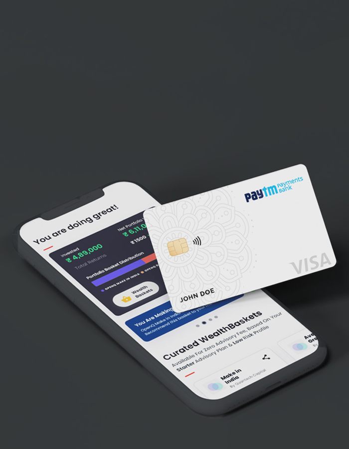
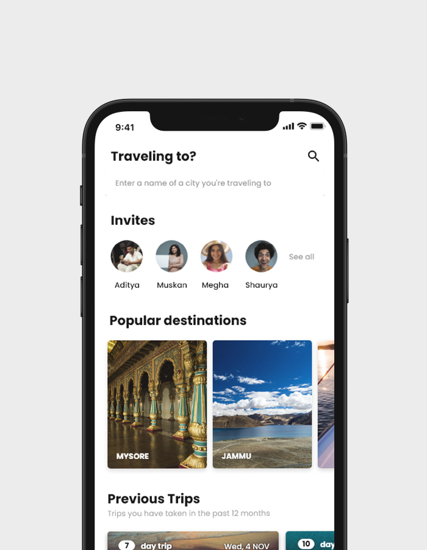
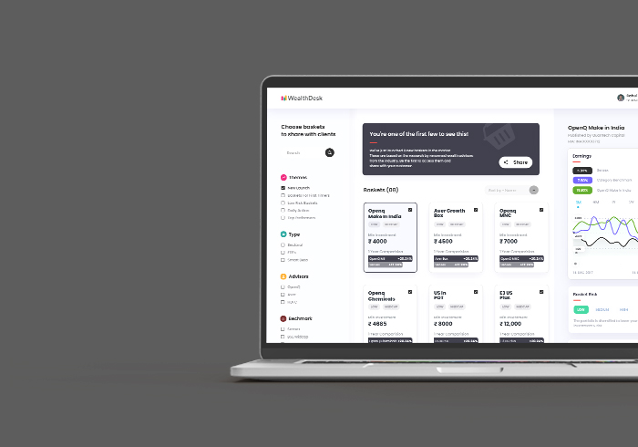
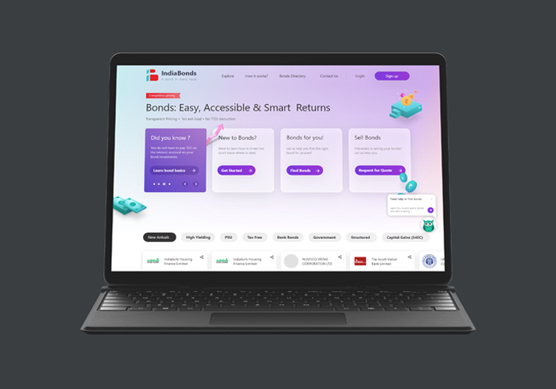
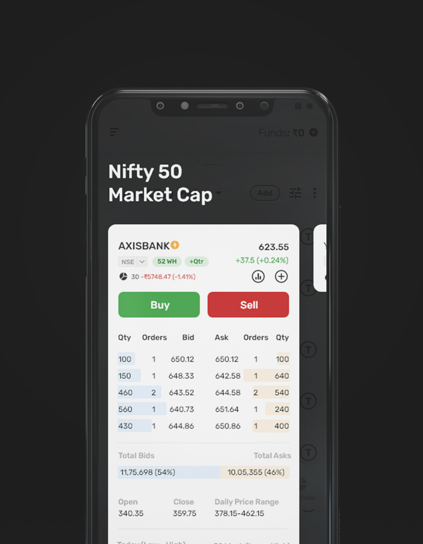
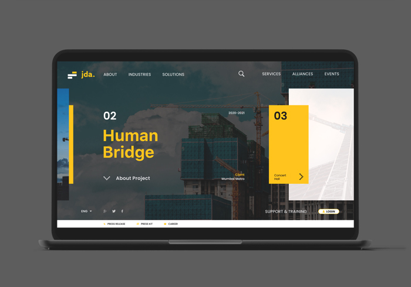

Six products, 2021 to 2025
Selected work
Products I've redesigned or built from scratch, plus a few explorations. Each one starts with where people got stuck, and ends with something that moved.
-
Fintech2025
Ledgerly
A personal finance app that makes budgeting feel calm. I led research, redesigned onboarding and simplified the spending overview so new users see where their money goes within a minute.
Case study
-
Healthcare2024
Wayfarer Health
Booking and care-plan flow for a telehealth clinic, designed with patients and nurses in the room. We cut the booking form from eleven fields to four and moved the rest into a guided conversation.
Case studyPassword protected
-
B2B SaaS2024
Parcelo
A dispatch dashboard redesign so logistics teams can spot late deliveries and act in seconds, not minutes. I mapped the dispatcher's real workflow first, then rebuilt the screen around it.
Case studyPassword protected
-
EdTech2023
Lumen Learn
Onboarding and lesson flow for an online learning platform, tested across three rounds of usability sessions with real students. The biggest fix was quiet: fewer choices on the first screen.
Case study
-
Fintech2022
Tradewise
A trading screen concept that puts the price, the order book and one clear buy or sell decision on a single card you can read with your thumb, even in a fast market.
Exploration
-
Infrastructure2021
JDA Infra
A website concept for an infrastructure firm that leads with finished projects instead of service lists, so prospective clients see the proof before the pitch.
Exploration